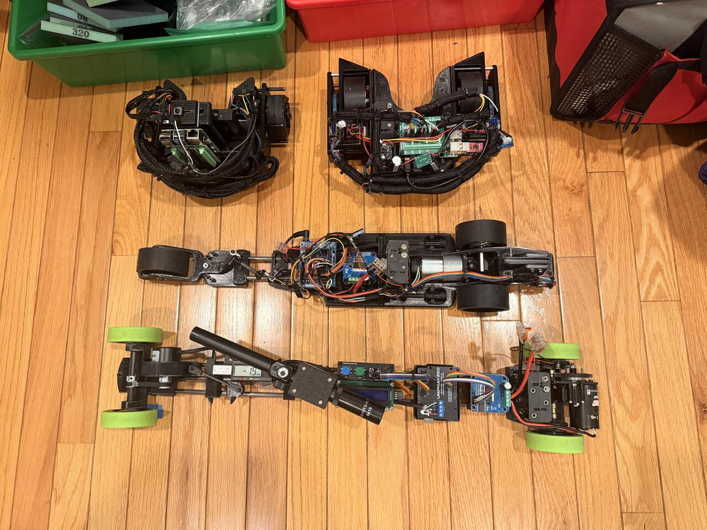

Three-point chassis
Two independently driven rear wheels provide propulsion and turning. The front assembly is the third contact point, avoiding the uneven loading a rigid four-wheel chassis can get on a slightly irregular surface.
Science Olympiad / Electric Vehicle
I wanted a vehicle that could stop at a known distance without relying on a guess. The tracking wheel and spring-loaded pod gave the Arduino a more direct measure of how far it actually moved.

01 / Vehicle systems
The rear wheels move the vehicle; a separate tracking wheel measures how far it actually goes. The Arduino uses that feedback to judge when to slow down and stop.

Two independently driven rear wheels provide propulsion and turning. The front assembly is the third contact point, avoiding the uneven loading a rigid four-wheel chassis can get on a slightly irregular surface.
The four-bar linkage, ground contact, and odometry pod share the front of the chassis. Their geometry has to work together while preserving room for the tracking wheel and enough ground clearance.
A spring keeps the tracking wheel against the floor as the chassis moves over small surface changes. An encoder reads the wheel, giving the Arduino a measurement of actual travel.
The Arduino compares measured displacement with the target and uses the difference to control the motors. That is more dependable than assuming a timed motor command always covers the same distance.
02 / Build timeline
The main steps in the build. Dates can be added once the event and testing history is filled in.
Date TBD
01Start with the limits on size, weight, and power, then make stopping accuracy the goal for the chassis and control system.
RequirementsDate TBD
02Use two belt-driven rear wheels for propulsion and turning, with a tripod layout to keep the support structure simple and light.
Chassis + driveDate TBD
03Bring the four-bar linkage and spring-loaded tracking wheel together at the front, keeping the wheel in contact without adding unnecessary drag.
Mechanism + sensingDate TBD
04Compare encoder distance with known travel, check contact over surface changes, and tune the Arduino's stopping response across repeated runs.
Testing03 / Design choices
The tripod layout saves hardware and weight, and avoids asking four wheels to stay loaded evenly on every surface. It also lets the front structure do more than one job.
The drive wheels are for propulsion; the tracking wheel is for distance. Measuring actual ground travel makes stopping less sensitive to drivetrain slip and changing motor performance.
The spring helps the tracking wheel stay on the floor over small bumps. It needs enough force for reliable contact, but not so much that it adds drag or interferes with the vehicle.
04 / Testing + next iteration
I focused on repeatability: check what the odometry measured against what the vehicle actually did, then work out whether the error came from the pod, drivetrain, or control.
Move the vehicle over known distances and compare the encoder estimate with the real measurement. Use repeated runs to tune wheel diameter, encoder resolution, and distance per rotation.
Watch the tracking wheel during acceleration, braking, turns, and small surface changes. Adjust the spring so it follows the floor without adding excessive friction.
Run straight and turning paths, check belt behavior and motor synchronization, then compare the target distance with the final stop over multiple runs.
05 / Build details

06 / In motion